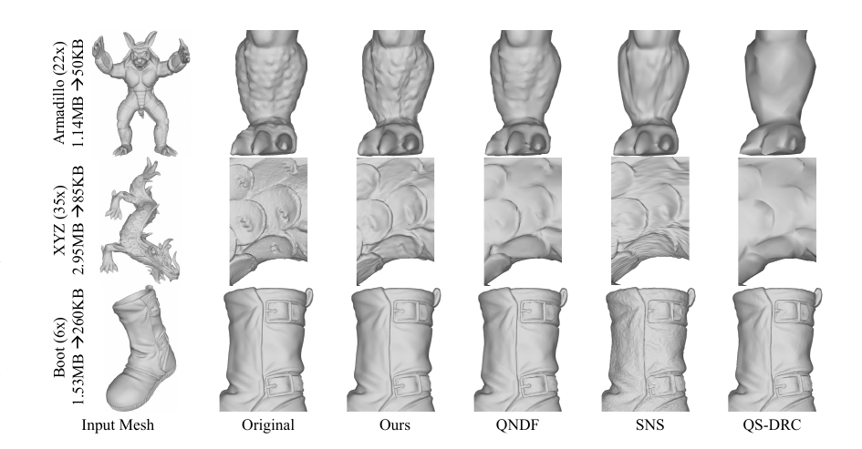
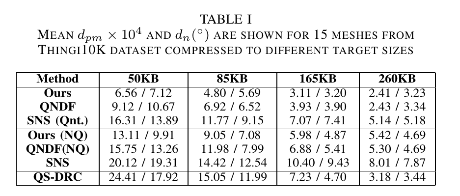

Implicit Neural Representations (INRs) have been demonstrated to achieve state-of-the-art compression of a broad range of modalities such as images, videos, 3D surfaces, and audio. Most studies have focused on building neural counterparts of traditional implicit representations of 3D geometries, such as signed distance functions. However, the triangle mesh-based representation of geometry remains the most widely used representation in the industry, while building INRs capable of generating them has been sparsely studied. In this paper, we present a method for building compact INRs of zero-genus 3D manifolds. Our method relies on creating a spherical parameterization of a given 3D mesh — mapping the surface of a mesh to that of a unit sphere — then constructing an INR that encodes the displacement vector field defined continuously on its surface that regenerates the original shape. The compactness of our representation can be attributed to its hierarchical structure, wherein it first recovers the coarse structure of the encoded surface before adding high-frequency details to it. Once the INR is computed, 3D meshes of arbitrary resolution/connectivity can be decoded from it. The decoding can be performed in real time while achieving a state-of-the-art trade-off between reconstruction quality and the size of the compressed representations.
Triangle meshes are still the standard 3D format across graphics, games, and VR/AR, and storing and streaming them compactly matters more as 3D content grows. Neural compression works very well, but most of it targets implicit surfaces: the network wastes capacity on empty space, and turning the result back into a mesh is slow and leaves artifacts. Methods that map the mesh onto a sphere can output meshes directly but suffer from warping. HNS encodes the shape in two levels on the sphere, a tiny network for the coarse shape and a second one for fine detail, and focuses training where warping is worst. The result decodes to a mesh of any resolution in real time.


@inproceedings{pentapati2025hns,
title = {Hierarchical Neural Surfaces for 3D Mesh Compression},
author = {Pentapati, Sai Karthikey and Phillips, Gregoire and Bovik, Alan C.},
booktitle = {Picture Coding Symposium (PCS)},
year = {2025}
}